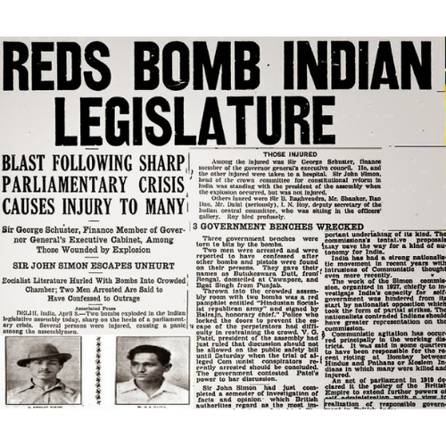

In 1928, the British government set up the Simon Commission to report on the political situation in India. Some Indian political parties boycotted the Commission because there were no Indians in its membership, and there were protests across the country. When the Commission visited Lahore on 30 October 1928, Lala Lajpat Rai led a march in protest against it. Police attempts to disperse the large crowd resulted in violence.
The superintendent of police, James A. Scott, ordered the police to lathi charge (use batons against) the protesters and personally assaulted Rai, who was injured. Rai died of a heart attack on 17 November 1928. Doctors thought that his death might have been hastened by the injuries he had received. When the matter was raised in the Parliament of the United Kingdom, the British Government denied any role in Rai's death.
Singh was a prominent member of the Hindustan Republican Association (HRA) and was probably responsible, in large part, for its change of name to Hindustan Socialist Republican Association (HSRA) in 1928. The HSRA vowed to avenge Rai's death. Singh conspired with revolutionaries like Shivaram Rajguru, Sukhdev Thapar, and Chandrashekhar Azad to kill Scott. However, in a case of mistaken identity, the plotters shot John P. Saunders, an Assistant Superintendent of Police, as he was leaving the District Police Headquarters in Lahore on 17 December 1928.
Contemporary reaction to the killing differs substantially from the adulation that later surfaced. The Naujawan Bharat Sabha, which had organised the Lahore protest march along with the HSRA, found that attendance at its subsequent public meetings dropped sharply. Politicians, activists, and newspapers, including The People, which Rai had founded in 1925, stressed that non-co-operation was preferable to violence. The murder was condemned as a retrograde action by Mahatma Gandhi, the Congress leader, but Jawaharlal Nehru later wrote that:
Bhagat Singh did not become popular because of his act of terrorism but because he seemed to vindicate, for the moment, the honour of Lala Lajpat Rai, and through him of the nation. He became a symbol, the act was forgotten, the symbol remained, and within a few months each town and village of the Punjab, and to a lesser extent in the rest of northern India, resounded with his name. Innumerable songs grew about him and the popularity that the man achieved was something amazing.
After killing Saunders, the group escaped through the D.A.V. College entrance, across the road from the District Police Headquarters. Chanan Singh, a Head Constable who was chasing them, was shot dead by Chandrashekhar Azad. They then fled on bicycles to pre-arranged safe houses. The police launched a massive search operation to catch them, blocking all entrances and exits to and from the city; the CID kept a watch on all young men leaving Lahore. The fugitives hid for the next two days. On 19 December 1928, Sukhdev called on Durgawati Devi, sometimes known as Durga Bhabhi, wife of another HSRA member, Bhagwati Charan Vohra, for help, which she agreed to provide. They decided to catch the train departing from Lahore to Bathinda en route to Howrah (Calcutta) early the next morning.
Bhagat Singh and Rajguru, both carrying loaded revolvers, left the house early the next day. Dressed in western attire (Bhagat Singh cut his hair, shaved his beard and wore a hat over cropped hair), and carrying Devi's sleeping child, Singh and Devi passed as a young couple, while Rajguru carried their luggage as their servant. At the station, Singh managed to conceal his identity while buying tickets, and the three boarded the train heading to Cawnpore (now Kanpur). There they boarded a train for Lucknow since the CID at Howrah railway station usually scrutinised passengers on the direct train from Lahore.At Lucknow, Rajguru left separately for Benares while Singh, Devi and the infant went to Howrah, with all except Singh returning to Lahore a few days later.
For somes time, Bhagat Singh had been exploiting the power of drama as a means to inspire the revolt against the British, purchasing a magic lantern to show slides that enlivened his talks about revolutionaries such as Ram Prasad Bismil who had died as a result of the Kakori conspiracy. In 1929, he proposed a dramatic act to the HSRA intended to gain massive publicity for their aims. Influenced by Auguste Vaillant, a French anarchist who had bombed the Chamber of Deputies in Paris, Singh's plan was to explode a bomb inside the Central Legislative Assembly.
The nominal intention was to protest against the Public Safety Bill, and the Trade Dispute Act, which had been rejected by the Assembly but were being enacted by the Viceroy using his special powers; the actual intention was for the perpetrators to allow themselves to be arrested so that they could use court appearances as a stage to publicise their cause. The HSRA leadership was initially opposed to Bhagat's participation in the bombing because they were certain that his prior involvement in the Saunders shooting meant that his arrest would ultimately result in his execution. However, they eventually decided that he was their most suitable candidate. On 8 April 1929, Singh, accompanied by Batukeshwar Dutt,
threw two bombs into the Assembly chamber from its public gallery while it was in session. The bombs had been designed not to kill, but some members, including George Ernest Schuster, the finance member of the Viceroy's Executive Council, were injured. The smoke from the bombs filled the Assembly so that Singh and Dutt could probably have escaped in the confusion had they wished. Instead, they stayed shouting the slogan "Inquilab Zindabad!" ("Long Live the Revolution") and threw leaflets. The two men were arrested and subsequently moved through a series of jails in Delhi.
Singh was re-arrested for murdering Saunders and Chanan Singh based on substantial evidence against him, including statements by his associates, Hans Raj Vohra and Jai Gopal. His life sentence in the Assembly Bomb case was deferred until the Saunders case was decided. He was sent to Central Jail Mianwali from the Delhi jail. There he witnessed discrimination between European and Indian prisoners. He considered himself, along with others, to be a political prisoner. He noted that he had received an enhanced diet at Delhi which was not being provided at Mianwali.
He led other Indian, self-identified political prisoners he felt were being treated as common criminals in a hunger strike. They demanded equality in food standards, clothing, toiletries, and other hygienic necessities, as well as access to books and a daily newspaper. They argued that they should not be forced to do manual labour or any undignified work in the jail. The hunger strike inspired a rise in public support for Singh and his colleagues from around June 1929. The Tribune newspaper was particularly prominent in this movement and reported on mass meetings in places such as Lahore and Amritsar. The government had to apply Section 144 of the criminal code in an attempt to limit gatherings.
Jawaharlal Nehru met Singh and the other strikers in Central Jail Mianwali. After the meeting, he stated: I was very much pained to see the distress of the heroes. They have staked their lives in this struggle. They want that political prisoners should be treated as political prisoners. I am quite hopeful that their sacrifice would be crowned with success. Muhammad Ali Jinnah spoke in support of the strikers in the Assembly, saying: The man who goes on hunger strike has a soul. He is moved by that soul, and he believes in the justice of his cause ... however much you deplore them and, however, much you say they are misguided, it is the system, this damnable system of governance, which is resented by the people.
The government tried to break the strike by placing different food items in the prison cells to test the prisoners' resolve. Water pitchers were filled with milk so that either the prisoners remained thirsty or broke their strike; nobody faltered and the impasse continued. The authorities then attempted force-feeding the prisoners but this was resisted. With the matter still unresolved, the Indian Viceroy, Lord Irwin, cut short his vacation in Simla to discuss the situation with jail authorities. Since the activities of the hunger strikers had gained popularity and attention amongst the people nationwide, the government decided to advance the start of the Saunders murder trial, which was henceforth called the Lahore Conspiracy Case.
Singh was transported to Borstal Jail, Lahore, and the trial began there on 10 July 1929. In addition to charging them with the murder of Saunders, Singh and the 27 other prisoners were charged with plotting a conspiracy to murder Scott, and waging a war against the King. Singh, still on hunger strike, had to be carried to the court handcuffed on a stretcher; he had lost 14 pounds (6.4 kg) from his original weight of 133 pounds (60 kg) since beginning the strike. The government was beginning to make concessions but refused to move on the core issue of recognising the classification of "political prisoner". In the eyes of officials, if someone broke the law then that was a personal act, not a political one, and they were common criminals. By now, the condition of another hunger striker, Jatindra Nath Das, lodged in the same jail, had deteriorated considerably. The Jail committee recommended his unconditional release, but the government rejected the suggestion and offered to release him on bail.
On 13 September 1929, Das died after a 63-day hunger strike. Almost all the nationalist leaders in the country paid tribute to Das' death. Mohammad Alam and Gopi Chand Bhargava resigned from the Punjab Legislative Council in protest, and Nehru moved a successful adjournment motion in the Central Assembly as a censure against the "inhumane treatment" of the Lahore prisoners. Singh finally heeded a resolution of the Congress party, and a request by his father, ending his hunger strike on 5 October 1929 after 116 days. During this period, Singh's popularity among common Indians extended beyond Punjab.
Singh's attention now turned to his trial, where he was to face a Crown prosecution team comprising C. H. Carden-Noad, Kalandar Ali Khan, Jai Gopal Lal, and the prosecuting inspector, Bakshi Dina Nath. The defence was composed of eight lawyers. Prem Dutt Verma, the youngest amongst the 27 accused, threw his slipper at Gopal when he turned and became a prosecution witness in court. As a result, the magistrate ordered that all the accused should be handcuffed.[44] Singh and others refused to be handcuffed and were subjected to brutal beating. The revolutionaries refused to attend the court and Singh wrote a letter to the magistrate citing various reasons for their refusal. The magistrate ordered the trial to proceed without the accused or members of the HSRA. This was a setback for Singh as he could no longer use the trial as a forum to publicise his views.
In Punjab province, a defence committee drew up a plan to appeal to the Privy Council. Singh was initially against the appeal but later agreed to it in the hope that the appeal would popularise the HSRA in Britain. The appellants claimed that the ordinance which created the tribunal was invalid while the government countered that the Viceroy was completely empowered to create such a tribunal. The appeal was dismissed by Judge Viscount Dunedin.
After the rejection of the appeal to the Privy Council, Congress party president Madan Mohan Malaviya filed a mercy appeal before Irwin on 14 February 1931. Some prisoners sent Mahatma Gandhi an appeal to intervene. In his notes dated 19 March 1931, the Viceroy recorded: While returning Gandhiji asked me if he could talk about the case of Bhagat Singh because newspapers had come out with the news of his slated hanging on March 24th.
It would be a very unfortunate day because on that day the new president of the Congress had to reach Karachi and there would be a lot of hot discussion. I explained to him that I had given a very careful thought to it but I did not find any basis to convince myself to commute the sentence. It appeared he found my reasoning weighty. The Communist Party of Great Britain expressed its reaction to the case:
The history of this case, of which we do not come across any example in relation to the political cases, reflects the symptoms of callousness and cruelty which is the outcome of bloated desire of the imperialist government of Britain so that fear can be instilled in the hearts of the repressed people. A plan to rescue Singh and fellow HSRA inmates from the jail failed. HSRA member Durga Devi's husband, Bhagwati Charan Vohra, attempted to manufacture bombs for the purpose, but died when they exploded accidentally.
You may also like it -->